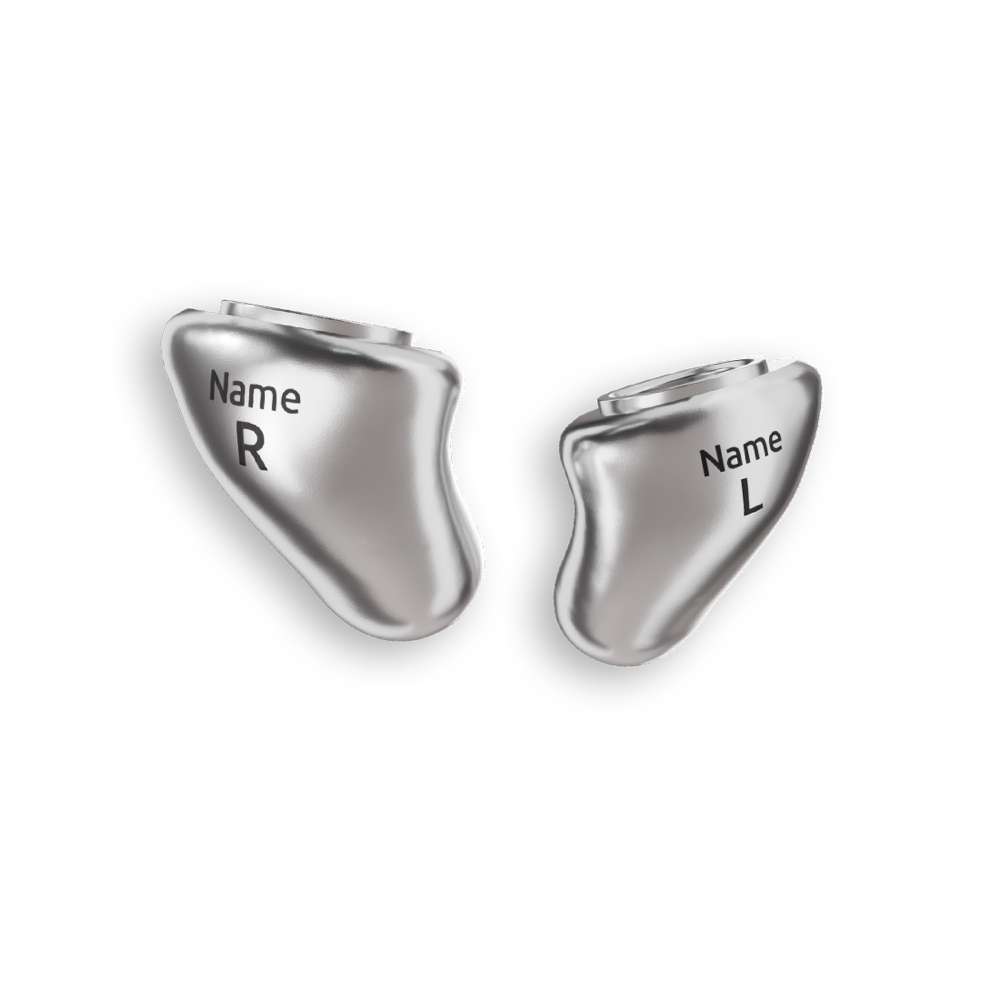
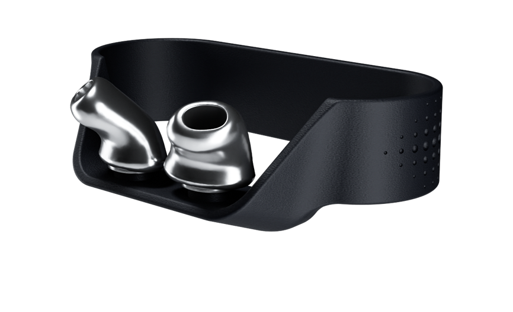

In-Ear Upgrade · maßgefertigt aus Titan
Deine AirPods Pro. Endlich maßgeschneidert.
snug Titan verwandelt die Apple AirPods Pro (3. Gen.) in echte Maßarbeit: ultraleichte Titan-Otoplastiken für perfekten Halt und höchsten Tragekomfort — Sound, ANC und alle Apple-Funktionen bleiben voll erhalten.
Für das maßgefertigte Titan-Set (links & rechts) inkl. snug Ring.

snug. Einfach noch mehr Pro.
In 3 Schritten zu deinen Maß-AirPods
Einfach, präzise und in besten Händen — maßgefertigt bei uns in Hoffnungsthal.
Ohrabformung nehmen
Wir nehmen bei dir vor Ort eine präzise Abformung deines Gehörgangs — die Basis für die perfekte Passform.
Maßfertigung aus Titan
Deine Otoplastik wird hochpräzise im 3D-Druck aus reinem Titan gefertigt — exakt auf deine Ohr-Anatomie.
Aufklicken & loshören
Über das Click-System fixierst du die snug-Otoplastik in Sekunden sicher an deinen AirPods Pro. Fertig.
Material
Warum Titan?
Titan ist so besonders wie deine Ohren: extrem belastbar bei minimalem Gewicht — und angenehm auch für empfindliche Haut.
- Ultraleicht und dennoch extrem stabil
- Hypoallergen & biokompatibel — ideal für empfindliche Ohren
- Korrosionsbeständig und langlebig
- Hochpräzise aus reinem Titan 3D-gedruckt
- Edles, naturbelassenes Dunkelgrau im Glanzfinish
Alle AirPods-Funktionen bleiben erhalten
snug verbessert nur den Sitz — nicht die Technik. Deine AirPods Pro können alles wie zuvor.
Voller Sound
Klangqualität bleibt unverändert erhalten.
Active Noise Cancelling
ANC funktioniert weiter wie gewohnt.
Transparenzmodus
Umgebung hören, wann immer du willst.
Alle Bedienfunktionen
Steuerung & Gesten bleiben voll nutzbar.

Inklusive
Der snug Ring — immer griffbereit
Der robuste snug Ring wird einfach über dein AirPods-Case gestülpt und hält deine Titan-Otoplastiken sicher — auch beim Laden.
- Robustes Thermoplast, passt über das AirPods-Case
- Otoplastiken bleiben geschützt und griffbereit
- Im Preis bereits enthalten
Deine persönlichen Extras
Auf Wunsch machen wir deine snug Titan noch individueller.
L/R-Markierung
Klare Kennzeichnung für links und rechts.
Wunsch-Lasergravur
Dein Name oder Wunschtext, dezent eingraviert.
Apple und AirPods sind Marken der Apple Inc. snug und bachmaier sind Marken der bachmaier GmbH. Hoffnungsohr ist Ihr Fachpartner für die maßgefertigte Anpassung.